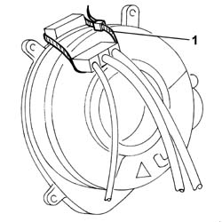
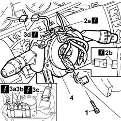
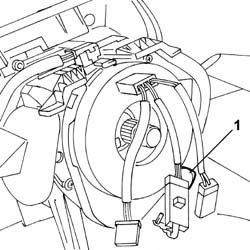

5550A10 stalk unit assembly - r+r
- Path
- Procedures > 55 ELECTRICAL EQUIPMENT > 5550 warning and manoeuvring indicators > 5550A STEERING COLUMN SWITCH UNIT > 5550A10 stalk unit assembly - r+r
- Kind
- repair procedure (removal / refitting; the operation number is the code)
- Applies to
- all engines; all production periods
- Interactive page
- https://sloeber94.github.io/elrnDB-lThss/en/#/149915
Applies to: all engines; all production periods
 Removing
Removing
 Refitting
Refitting- Open the boot and disconnect the negative battery terminal.
See in Op. 5580C18 AIR BAG MODULE - R.R.
- [4410A10]
See in Op. 7040A26 Steering column TRIM - R.R.
1. If the steering column switch unit is being reused, it is advisable, for extra safety, to secure the two clock spring plates with a plastic band to prevent accidental rotation.

Applies to: all engines; all production periods
1. Loosen the bolt fixing the steering column switch unit to the steering column.
2. Disconnect the electrical connector for the clock spring coupling (2a) and the steering sensor (2b).
 | Description | Connector |
|---|---|---|
2a | Clock spring coupling | D047 |
3. Move the steering column switch unit aside and disconnect the electrical connectors (3a), (3b), (3c) and (3d).
| Description | Connector |
|---|---|---|
3a | Steering column switch unit | H005A |
| Description | Connector |
|---|---|---|
3b | Steering column switch unit | H005B |
| Description | Connector |
|---|---|---|
3c | Steering column switch unit | H005C |
| Description | Connector |
|---|---|---|
3d | Cruise Control control | H007 |
4. Remove the steering column switch unit.

Applies to: all engines; all production periods
Refitting
Removing- Check that the steering column switch unit is not damaged and, if necessary, conduct an electrical test.
- Connect the electrical connectors for the steering column switch unit, the Cruise Control system control, the clock spring coupling and the steering angle sensor.
| Description | Connector |
|---|---|---|
. | Steering column switch unit | H005A |
| Description | Connector |
|---|---|---|
. | Steering column switch unit | H005B |
| Description | Connector |
|---|---|---|
. | Steering column switch unit | H005C |
| Description | Connector |
|---|---|---|
. | Cruise Control control | H007 |
| Description | Connector |
|---|---|---|
. | Clock spring coupling | D047 |
- Fit the steering column switch unit on the steering column.
1. Before tightening the bolt fixing the steering column switch unit retaining band, check that the reference teeth (1a) and (1c) on the clock spring are centered in relation to the steering column (1b).
Applies to: all engines; all production periods
1. It is necessary to check the distance between the reference tooth (1a) and the steering column (1b) and the distance between the steering column and the reference tooth (1c) using a gauge. The difference between the two measurements should not exceed 0.5 mm.
2. Tighten the bolt fixing the steering column switch unit retaining band without altering the position of the actual steering column switch unit. Once the tightening is complette, check the distance between the steering column and the clock spring reference teeth once again; if the difference between the two measurements is more than 0.5 mm then the procedure for centering the steering column switch unit on the steering column should be repeated.
Applies to: all engines; all production periods
- If the steering column switch unit is being reseued, remove the retaining band for the two clock spring plates which may have been fitted previously.
1. If the steering column switch unit is being replaced with a new one, remove the clock spring safety tab.

Applies to: all engines; all production periods
See in Op. 7040A26 Steering column TRIM - R.R.
See in Op. 4110A10 STEERING WHEEL - R.R. for replacement or checks
-
See in Op. 5580C18 AIR BAG MODULE - R.R.
- Connect the negative battery terminal.
- Test the operation of the systems involved.
Topics linked from this page (3)
- 4110A10 STEERING WHEEL - R.R. for replacement or checks
- 5580C18 AIR BAG MODULE - R.R.
- 7040A26 Steering column TRIM - R.R.
Topics that link to this page (19)
- I90 THE FOLLOW ME HOME FUNCTION IS NOT ACTIVATED
- 3350E20 STEERING ANGLE SENSOR - R.R.
- 5010B56 Duct between climate control casing and air duct to rear seats - R.R.
- 5010D27 UPPER MIXED AIR TEMPERATURE SENSOR (one) left or right - R.R. following electrical circuit check
- 5010D28 LOWER MIXED AIR TEMPERATURE SENSOR (one) left or right - R.R. following electrical circuit check
- 5040C10 Air conditioning CASING - R.R.
- 5040D86 air conditioner right air mixture flap control motor - r r
- 5040D94 Air conditioning upper left air distribution flap control motor (DEFROST) - R.R.
- 5040D96 Air conditioning upper right air distribution flap control motor (DEFROST) - R.R.
- 5505C26 ENGINE COMPARTMENT built in wiring - R.R.
- 5505C31 Under-FACIA WIRING - R.R.
- 5505C41 PASSENGER COMPARTMENT built in WIRING - R.R.
- 5550A12 complete stalk unit - r+r for versions with air bag
- 5560B11 ANALOGUE CONTROL PANEL - R.R. or Replace
- 5580A10 Cruise control LEVER ASSEMBLY - R.R.
- 5580C12 CLOCK SPRING for AIR BAG system - R.R.
- 7040A10 Instrument facia TRIM - R.R.
- 7040A95 Left or right reinforcement crossmember (one), dashboard and bodyshell supporting crossmember - R.R.
- 7040L17 Passenger compartment front floor carpet - R.R.